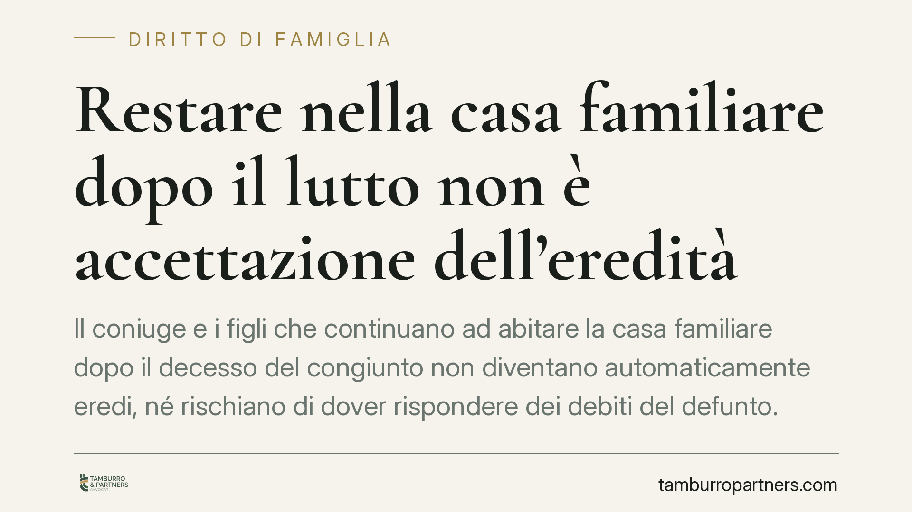

Restare nella casa familiare dopo il lutto non è accettazione dell'eredità
Il coniuge e i figli che continuano ad abitare la casa familiare dopo il decesso del congiunto non diventano automaticamente eredi, né rischiano di dover rispondere dei debiti del defunto. Un recente orientamento della Cassazione distingue tra il semplice continuare a vivere nell'immobile e gli atti che, invece, segnano l'accettazione del patrimonio ereditario. La differenza è decisiva.

Il fatto
La morte di un familiare pone una domanda spesso sottovalutata: chi resta ad abitare la casa diventa per ciò stesso erede? E, soprattutto, risponde dei debiti lasciati dal defunto?
Secondo un recente orientamento della Corte di Cassazione (Sez. II civile, pronuncia del gennaio 2026, il cui riferimento completo è ancora da verificare al momento della pubblicazione), la permanenza del coniuge superstite e dei figli conviventi nella casa familiare non costituisce di per sé accettazione tacita dell'eredità. Si tratta di un chiarimento utile, perché incide direttamente sul rischio di assumere i debiti ereditari.
Inquadramento normativo
Il punto di partenza è l'art. 476 del Codice civile: l'accettazione è tacita quando il chiamato all'eredità compie un atto che presuppone necessariamente la volontà di accettare e che non avrebbe il diritto di compiere se non nella qualità di erede. In altri termini, serve un comportamento concludente, cioè un atto di disposizione o di gestione tipicamente riservato a chi ha accettato.
Continuare a vivere nella casa, per il coniuge, non rientra in questa categoria. L'art. 540, secondo comma, c.c. attribuisce infatti al coniuge superstite un diritto di abitazione autonomo sulla casa adibita a residenza familiare: un diritto che nasce direttamente dalla successione a titolo di legato, non da una scelta di accettare l'intero patrimonio. Restare nell'immobile, quindi, è esercizio di una prerogativa propria, non un atto da erede.
Il confine è netto: restare non equivale a disporre. Pagare le utenze o custodire i beni per non disperderli sono atti conservativi e non impegnano. Diventano invece accettazione tacita, ad esempio: vendere o affittare a terzi un bene del defunto, incassare crediti ereditari, riscuotere somme dai conti e utilizzarle, pagare un debito del defunto con denaro dell'eredità, promuovere una causa in qualità di erede.
Il nodo dei termini: l'art. 485 c.c.
Un'imprecisione frequente riguarda i termini. L'art. 485 c.c. si applica al chiamato che si trova nel possesso dei beni ereditari e prevede un meccanismo a due tempi:
- tre mesi dall'apertura della successione (o dalla notizia della delazione) per redigere l'inventario;
- ulteriori quaranta giorni, una volta completato l'inventario, per deliberare se accettare o rinunciare.
Se il chiamato nel possesso non rispetta questi termini, è considerato erede puro e semplice, con conseguente responsabilità illimitata per i debiti. Il chiarimento rilevante è che il coniuge e i figli che restano nella casa in forza del diritto di abitazione non sono per ciò solo "nel possesso" ai fini dell'art. 485: la loro presenza è giustificata da un titolo autonomo, e non fa scattare automaticamente il meccanismo trimestrale.
Implicazioni pratiche
Per il coniuge superstite e i figli conviventi, la conseguenza è concreta: non si diventa eredi per il solo fatto di non aver traslocato. La qualità di erede – e con essa l'esposizione ai debiti del defunto – dipende da ciò che si fa con il patrimonio, non dal tetto sotto cui si continua a vivere.
Chi teme debiti ereditari conserva le opzioni ordinarie: l'accettazione con beneficio d'inventario (art. 484 c.c.), che separa il patrimonio del defunto da quello dell'erede limitando la responsabilità ai beni ricevuti, e la rinuncia all'eredità (art. 519 c.c.), che va fatta con dichiarazione ricevuta da notaio o dal cancelliere del tribunale competente.
Attenzione, infine, a un adempimento distinto: la dichiarazione di successione da presentare all'Agenzia delle Entrate è un obbligo di natura fiscale e non costituisce, di per sé, accettazione dell'eredità. Presentarla non trasforma automaticamente il chiamato in erede.
Cosa fare in concreto
- Non compiere atti di disposizione sui beni del defunto (vendite, prelievi dai conti, riscossione di crediti) finché non si è deciso se accettare.
- Limitarsi, nell'immediato, ad atti meramente conservativi: custodire i beni, pagare le spese urgenti con risorse proprie.
- Verificare l'esistenza e l'entità di eventuali debiti ereditari prima di qualsiasi scelta.
- Valutare, in presenza di passività, l'accettazione con beneficio d'inventario o la rinuncia, nei termini di legge.
- Trattandosi di una materia dai confini sottili, è opportuno un approfondimento tecnico prima di assumere decisioni che possono risultare irreversibili.
Contributo informativo a cura di Tamburro & Partners - Avv. Giuseppe Tamburro. Non costituisce parere legale.
Ogni famiglia ha il suo equilibrio.
Separazione, divorzio, affidamento, assegno: se vuoi un confronto riservato su una specifica situazione, scrivi allo studio. Ti rispondiamo entro un giorno lavorativo.